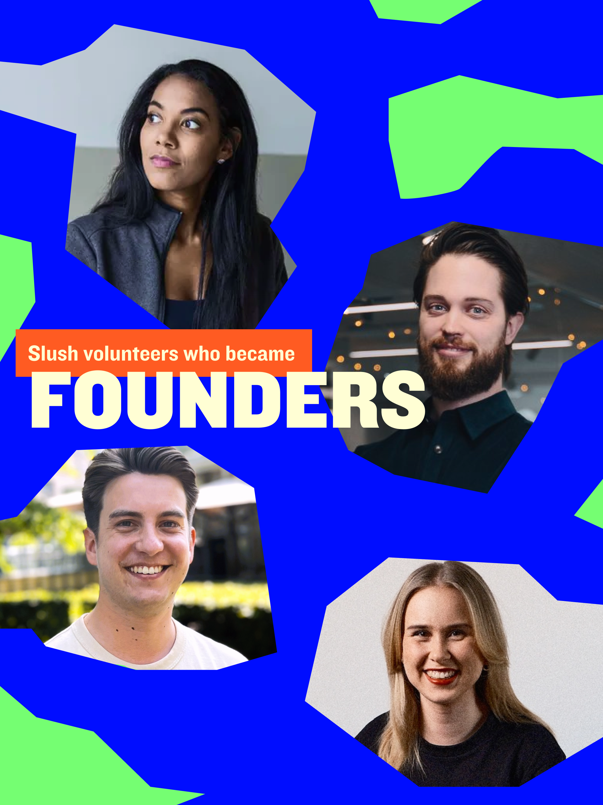

Sami Marttinen founded Swappie in 2016. Swappie is Europe’s leading refurbisher of used iPhones, with an annual revenue of over €200 million. Sami, while remaining on Swappie’s board, has now stepped down from his full-time position to build his new startup.
“The biggest impact [of volunteering at Slush] at the time was exposure to the whole ecosystem, which fueled my drive to start a company right away instead of years later—my co-founder and I decided to start building Swappie already a couple of months after Slush.”
For many Slush volunteers, the experience unlocks a belief in endless possibilities. Antonia Eneh, who founded Elva in 2025, recalls being inspired by the young team building Slush and wanting to get involved in the ecosystem as soon as possible.
“At Slush, people place infinite trust in you: that you can do absolutely anything if you just dare to go for it. I’ve utilized that same belief with my own team now as CEO.”
Elva has raised €1.3 million in funding to address a key bottleneck faced by European startups: moving talent across borders.
Olli Kangas founded Intergrid in 2023 to accelerate the transition to renewable energy systems; the 40-person team now serves over a hundred industrial customers. Kangas highlights that volunteering at Slush in 2015 and 2017 lowered his threshold to becoming an entrepreneur.
“Slush is the one community where the most ambitious and curious people get things done, but with a twinkle in their eyes.”
All the entrepreneurs interviewed by Slush share the experience of Slush accelerating their path to entrepreneurship. Sanni Makkonen even got her business idea for Inspot from Slush — the idea stemmed from a personal problem, the difficulty of finding her own photo among thousands of event photos. Now, Inspot matches every event photo to the right person in an instant. Although Makkonen’s startup idea came from Slush, her passion for entrepreneurship had already existed since childhood.
Interest in the startup ecosystem among volunteers has risen 16 percentage points since 2023 and is strongest among first-timers and younger age groups.
Young people’s interest in becoming founders in Finland aged 18–25 has grown explosively: in the early 2000s, only 1% considered an entrepreneurial career — in 2025 that same number is over 50% (Yrittäjät 2025).
“We’re inspired to see the shift in the interest in entrepreneurship. We need more young people who set out to build a company even if the idea isn’t fully formed yet.”
The charts below are drawn from Slush’s volunteer data across the 2023–2025 reference period. The largest single age group is 20–24-year-olds, gender distribution has stayed even, and about 90% of volunteers primarily live in Finland. Hover over any bar for the exact share.
The largest single age group among Slush volunteers is 20–24-year-olds, who make up roughly 38–46% of volunteers depending on the year. Gender distribution among volunteers has been very even in the 2020s; 50–60% are women. About 90% of Slush’s volunteers primarily live in Finland. The reference period is 2023–2025. Interviewees were selected for this piece from Slush’s networks.
The alumni founding rate of 15% is drawn from the Slush Alumni Founder Factory Report (2025). The comparison on young people’s interest in entrepreneurship in Finland references Yrittäjät (2025).